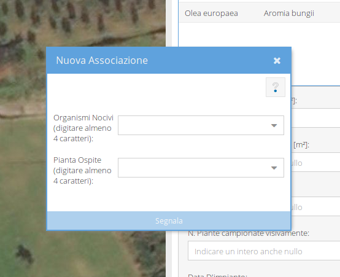

Se non fosse possibile trovare un'associazione pianta-organismo nocivo nè nel database EPPO nè nel database Regionale, è possibile proporre una nuova associazione tramite il bottone Nuova Associazione della tool bar delle osservazioni.

La conferma o meno della proposta sarà a cura dell'amministratore.
È possibile controllare le associazioni proposte e lo stato delle richieste utilizzando il bottone Segnalazioni della tool bar principale dell'applicazione.